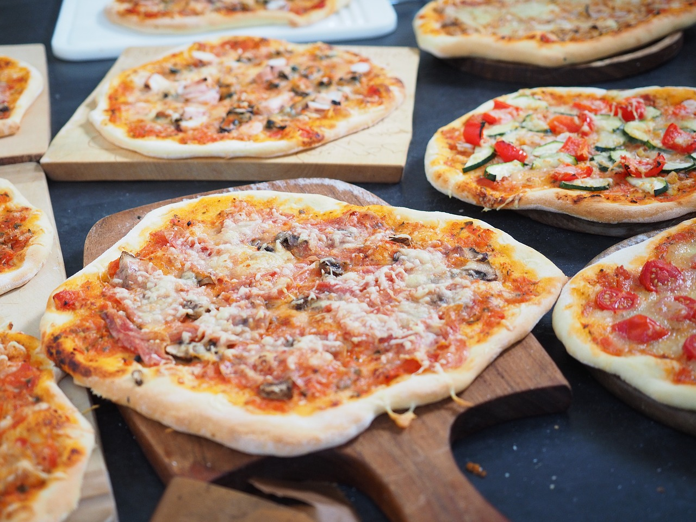

Catering
CATERING RUNT OM I GÖTEBORG
Hos Pizzeria Tomato har vi en massa alternativ för dig som önskar catering. För att beställa catering krävs att ert sällskap är ett minimum på 10 personer. Du som önskar att beställa catering hos oss har menyn med våra pizzor på vår startsida som du hittar här.
Vi erbjuder catering i hela Göteborgsområdet. Ifall du beställer catering har du två alternativ. Antingen äter du hos oss eller så beställer du maten till en specefik plats vid en specefik tidpunkt inom Göteborgsområdet. Betalningen sker vid utkörningen eller hos oss om du väljer att äta här.
Ifall du har några specefika önskemål om maten är det bara att skicka med det i din caterings beställning. Det kan vara allt från specialkost och allergier och andra förslag ni har. Vi kommer då ta hänsyn till denna infromation och era önskemål.
För att beställa catering hos oss så kopierar du mallen nedan och skickar det i ett epostmeddelande till oss så svarar vi så snart som möjligt. Vår email: PizzeriaTomato@gmail.com
Ifall du har yttligare frågor om vår cateringstjänst så finner du våra kontaktuppgifter nedan!
Caterings mall
Adress (Ifall du väljer att inte äta här):
Beställning (Fyll i hur många och vilka pizzor du önskar att beställa OBS, minst 10 stycken):
Övrigt (Här fyller du i övriga önskemål och allergier):
Ditt telefonnummer (Ifall vi vill kontakta dig om din beställning):